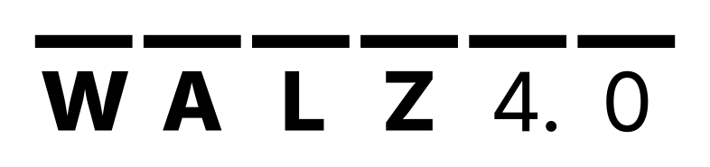

Ein vierbeiniger Roboter (SID, DEEP Robotics Lite3) mit Greifer auf dem Rücken verteilt drei
Metallstützen auf feste Plätze und holt sie wieder ab. Ein Linux-PC steuert alles: main.py führt den Ablauf
aus (Frontend :8080), trainer.py bringt dem SID neue Bewegungen bei (eigenes Programm, Frontend :8081).
transitions)station/cmdliefern = nur 1, holen = nur 3. Pause hält nach dem laufenden Schritt an.
Arbeits-Threads (Ablauf, Band, Navigation) melden ihr Ergebnis als Trigger zurück; der Automat ist threadsicher. Fehlt beim Start die Pose, misst die Station automatisch neu, sobald die Ortung den SID sieht.
Gelernte Laufmodelle (Physik-Grundlinie + Gaußprozess) sagen voraus, wohin ein Befehl (vor, seitlich, drehen …, Dauer) den SID bringt. Regelkreis pro Schritt:
Grob: drehen + gerade laufen; fein: Suche über Befehlsfolgen. Ziel ±5 cm / 5°. Docken, Ausdocken und Abgabe laufen gerade ohne Drehen.
estop): SID, Band, Achse sofort stoppen.Station (Symbol „Station“): F2 Start · F3 Pause/Weiter · F4 Stop · F8 Quittieren · Leertaste NOT-AUS · F10 Beenden. Rechts oben „Systeme“: Broker, Ortung, SID, Band, Greifer, YOLO in grün/gelb/rot.
Bewegungstraining (Symbol „Bewegungstraining“): Policy wählen (gerade, gemischt, Drehungen, fein) → Daten sammeln (SID läuft Zufallsbefehle im 1-m-Umkreis) → trainieren → Kandidat übernehmen.
| main.py | Zustandsautomat, Ablauf, Befehle, Start und Ende |
| navigate.py | Planer, Sicherheitszone, Docken · lite3_commander.py: UDP an SID |
| aruco_tracker_calibrated.py | Ortung: Kamerabild → Pose per MQTT |
| arm_controller.py | Greifer (Grenzen in arm_config.py) |
| conveyor_controller.py | Fließband |
| F_stilt_erkennung_YOLO.py | IR-Kamera + YOLO |
| station_frontend.py | Frontend der Station, Systemübersicht |
| trainer_server.py | Bewegungstraining (mit trainer.py) |
| collect_*/train_*.py | Daten sammeln / Modelle trainieren |
| station/cmd | Befehle als Text (start, stop, estop …) |
| station/state | Zustand als JSON (retained) |
| station/tracker/… | Pose, Status, Vorschaubild der Ortung |
| station/arm/…, conveyor… | Greifer und Band: Befehle, Zustand |
models/ aktive Modelle · data/ Trainingsdaten, Fahrlogs, Diagramme ·
config/ Frontend und Tasten · logs/ eine Logdatei pro Start.